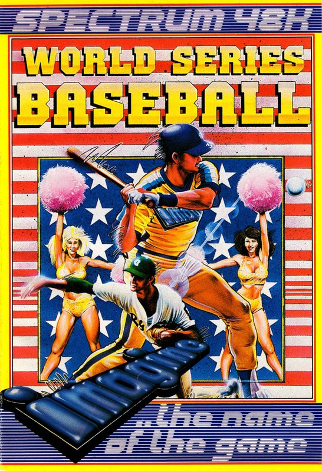
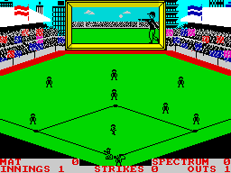
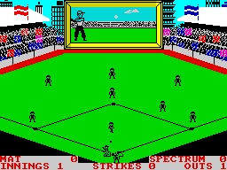

World Series Baseball


{kind=link}

| Publisher: | Imagine Software |
| Price: | £6.95 |
| Year: | 1985 |
| Source: | CRASH, Issue 16 |

After the spate of American Football simulations, comes the other great American sport — baseball. This program is also interesting in view of the fact that it is the first from Imagine as now managed by Ocean. As the inlay states, baseball is similar to European ‘Rounders’ — up to a point. Each team either fields or bats — a half ‘innings’ lasts as long as the batting (or striking) team keep three men in. The ball is thrown by the Pitcher at the Striker and it must remain within the triangle extending from the ‘home base’ where the striker waits. A striker is ‘out’ if he misses three successive strikes, is caught by a fielder, or run out. The pitch is marked with four bases at the corners of a square, and after a successful strike, the object is to make the striker run from home base to the next, or as many as possible before the fielders return the ball to a base or the pitcher. A striker can be run out if the ball is returned to a base and held by a fielder with his foot on that base, or if the runner is ‘tagged’ by a fielder holding the ball between bases.

So much for the game idea.
World Series Baseball allows two players to compete against each other simultaneously using either the keyboard or suitable twin joystick interfaces, or one player versus the computer. The screen display shows the squared off pitch surrounded by the grandstands on all sides. Centred at the rear between two grandstands is a large display screen on which comes up most of the information relating to the game. This is also used, however, to display a large, side-on, close up of the pitcher throwing the ball, its travel, and eventually the striker hitting it. This gives the player(s) an opportunity to watch both the long view action and the close up for fine tuning. Control of both pitching and striking is achieved through the keys or joystick, and fielding control is handed automatically over to the fielder nearest where the ball will land. On the long view, the ball’s shadow acts as a guide to catching shots.
CRITICISM

‘The graphics of this action simulation are excellent, every bit as good as Ocean’s Match Day, and the screen layout really gives the atmosphere of a big game. There is tremendous attention to detail, right down to the between match prancing cheer leaders which can be seen in ranks on the field, while the close up screen shows them in animated detail. Skill is required in both pitching and striking, to judge the position of the ball and the strength and angle of the shot. Controlling your fielders is something to leave out for the first few plays until you get the hang of how the game goes, and then, just when you thought you had it all pat, another strategic area of play is opened up to you. I like the fact that this is one of those rare games that can be played by two people simultaneously. The real joy of this game is the elegant way in which the top screen and main playing area interact with each other. I think Baseball is going to prove immensely popular.’
‘Baseball is a good simulation of the real game. The split screen graphics work well. Playing the game is a little difficult at first and early attempts at strategic fielding ended in sheer chaos. Rounders, oops sorry, Baseball is well done, but I don’t really need to see ads for local stores between games. Mind you, this could reduce the price a little — there’s food for thought. The addictive qualities tend to build up slowly; give it a quick play and you could walk away. Play it for longer and you’re hooked. It’s nice to see the name of Imagine representing good games again.’
‘I think the biggest question over the relaunching of Imagine is why do it at all? I’m sure a lot of people will be very wary of buying an Imagine game until they’ve had a good look at it. As to the game itself it is the best thing that has ever been released by Imagine. The graphics are good and there are no really serious attribute problems. If I had to liken this game to another sports simulation I would say that it’s baseball’s equivalent of football’s excellent Match Day. Playability is high and the game is certainly addictive when you consider that you can play it against either friends or the computer. Sound is used surprisingly well for the Spectrum and colour is also used well because you can define the colour of your teams. Getting started on this game is relatively simple and none of the procedures for playing the game are awfully complex. This is a very good sports simulation and thankfully it lives up to the image that Imagine tried to portray for their games before they went bust. Overall an excellent game especially if you like sports simulations.’
COMMENTS
| Control keys: | Both players may define their own keys (as long as no key is shared) |
| Joystick: | Almost any via UDK |
| Keyboard play: | Responsive |
| Use of colour: | Generally excellent, team colours may be altered |
| Graphics: | The small ‘on field’ stick characters work well, but the larger ‘closeup’ graphics are excellent |
| Sound: | Good tune and spot effects |
| Skill levels: | Depends on the players! |
| General Rating: | An excellent action sports simulation with some very good features. Addictivity and playability is high, but more so with two players — our rating reflects this aspect. |
| Use of Computer: | 91% |
| Graphics: | 92% |
| Playability: | 87% |
| Getting Started: | 85% |
| Addictive Qualities: | 89% |
| Value For Money: | 85% |
| Overall: | 91% |